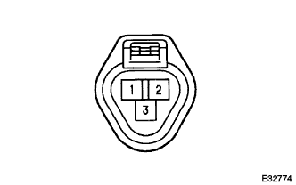
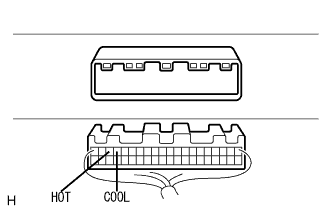

メーター&ゲージシステム ウォーターテンパラチャウォーニングランプ作動不良 |
| 手順1 | TaSCANデータ読み取り（エンジンコントロールコンピユータ） |
SSTを使用して、画面表示に従って操作を行い、[ECUデータモニター]画面を表示させコンピュータデータを点検する。
| 項目名 | 項目名解説 | 点検条件 | 参考値 | 異常時の点検項目 |
|---|---|---|---|---|
| エンジン冷却水温[THW] | エンジン冷却水温度を表す 表示範囲:-40-140°C |
|
| THW電圧 (水温センサ) |
|
| ||||
| OK | |
| 手順2 | コンビネーションメータASSY単体点検（水温ウォーニング） |
|  |
作動点検
E.F.Iウォータテンパラチヤのコネクタを切り離す。
IGスイツチをONにしたとき、COOLウォーニングインジケータの状態を点検する。
SST(トヨタエレクトリカルテスター)を使用して、E.F.Iウォータテンパラチヤより切り離したコネクタ3端子をボデーアースと短絡させたときのHOTウォーニングランプの状態を点検する。
|
| ||||
| NG | |
| 手順3 | ワイヤハーネスまたはコネクター点検（コンビネーシヨンメータASSY-エンジンコントロールコンピユータ） |
点検前準備
コンビネーシヨンメータASSYのコネクタを切り離す。
|  |
エンジンコントロールコンピユータのコネクタ(HOT、COOL端子)を切り離す。
導通点検
SST(トヨタエレクトリカルテスター)を使用して、コンビネーシヨンメータASSYの車両ワイヤハーネス側コネクタ18(HOT)端子←→エンジンコントロールコンピユータHOT端子間の導通を点検する。
SST(トヨタエレクトリカルテスター)を使用して、コンビネーシヨンメータASSYの車両ワイヤハーネス側コネクタ17(COOL)端子←→エンジンコントロールコンピユータCOOL端子間の導通を点検する。
|
| ||||
| OK | ||
| ||